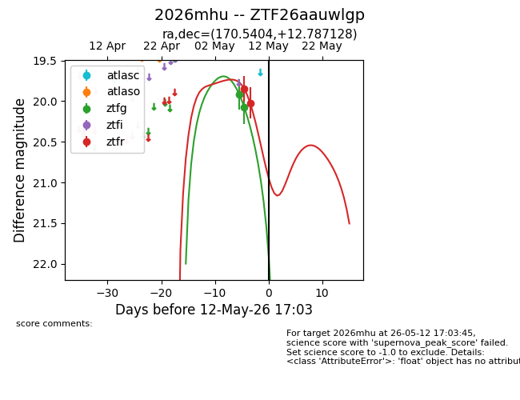
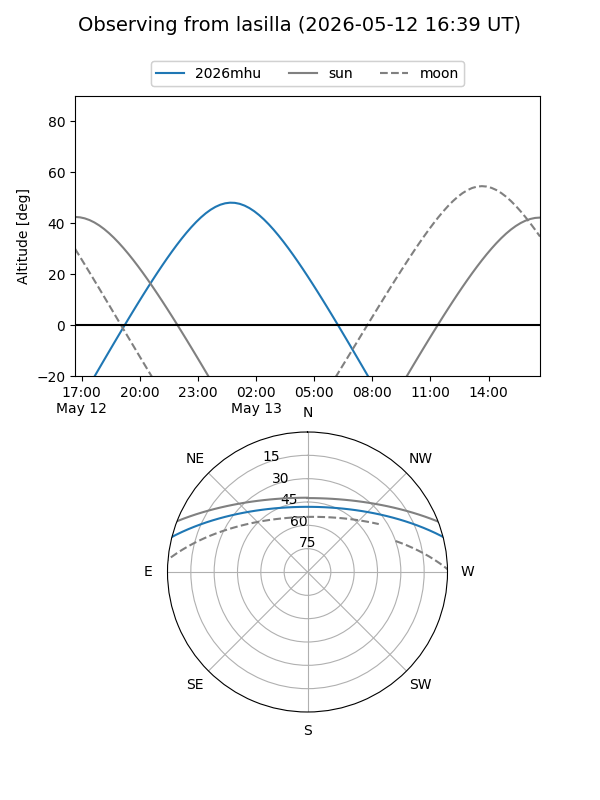
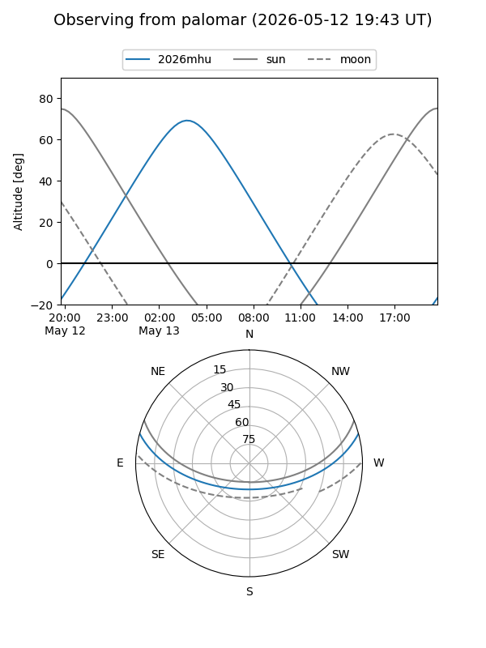
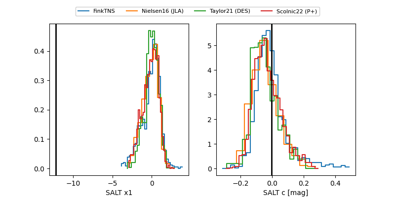

2026mhu
Target 2026mhu at 2026-05-12 17:05
Aliases and brokers:
FINK: link
Lasair: link
ALeRCE: link
TNS: link
YSE: link
alt names
ZTF26aauwlgp (ztf,fink_ztf)
2026mhu (tns,yse)
Coordinates:
equatorial (ra, dec) = 170.5404,+12.78713
equatorial (HMS+DMS) = 11:22:09.71,+12:47:13.66
galactic (l, b) = (242.9971,+64.66443)
Flags:
Photometry:
last ztfg=20.08, ztfr=20.02
2 ztfg, 2 ztfr detections
Lightcurve

Visibility


Additional plots
